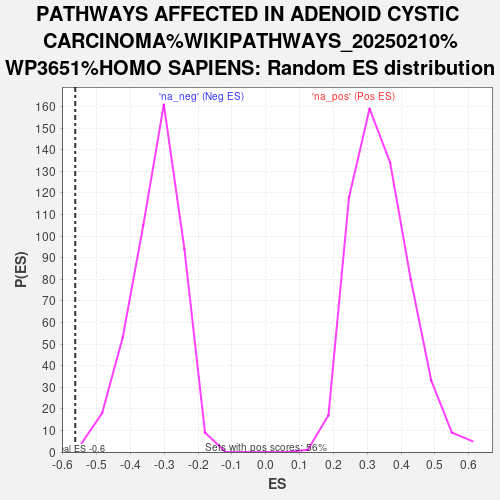

| | | Dataset | GFPPositive_GFPNegative |
| Phenotype | NoPhenotypeAvailable |
| Upregulated in class | na_neg |
| GeneSet | PATHWAYS AFFECTED IN ADENOID CYSTIC CARCINOMA%WIKIPATHWAYS_20250210%WP3651%HOMO SAPIENS |
| Enrichment Score (ES) | -0.5629661 |
| Normalized Enrichment Score (NES) | -1.7395723 |
| Nominal p-value | 0.0022522523 |
| FDR q-value | 0.37499782 |
| FWER p-Value | 1.0 |
Table: GSEA Results Summary
 Fig 1: Enrichment plot: PATHWAYS AFFECTED IN ADENOID CYSTIC CARCINOMA%WIKIPATHWAYS_20250210%WP3651%HOMO SAPIENS
Fig 1: Enrichment plot: PATHWAYS AFFECTED IN ADENOID CYSTIC CARCINOMA%WIKIPATHWAYS_20250210%WP3651%HOMO SAPIENS
Profile of the Running ES Score & Positions of GeneSet Members on the Rank Ordered List
| SYMBOL | RANK IN GENE LIST | RANK METRIC SCORE | RUNNING ES | CORE ENRICHMENT | | 1 | HRAS | 2978 | 0.507 | -0.1318 | No |
| 2 | MYBL1 | 3671 | 0.388 | -0.1484 | No |
| 3 | RAF1 | 3895 | 0.359 | -0.1415 | No |
| 4 | CEBPA | 4437 | 0.290 | -0.1551 | No |
| 5 | EP300 | 4596 | 0.274 | -0.1492 | No |
| 6 | BCORL1 | 4780 | 0.256 | -0.1456 | No |
| 7 | SRCAP | 4966 | 0.237 | -0.1431 | No |
| 8 | CHEK1 | 6490 | 0.120 | -0.2177 | No |
| 9 | SMC1A | 6683 | 0.106 | -0.2224 | No |
| 10 | DTX4 | 6736 | 0.102 | -0.2199 | No |
| 11 | INSRR | 7075 | 0.081 | -0.2336 | No |
| 12 | BRCA1 | 7371 | 0.064 | -0.2460 | No |
| 13 | NFIB | 7406 | 0.062 | -0.2446 | No |
| 14 | ARID1A | 7744 | 0.041 | -0.2603 | No |
| 15 | CHEK2 | 7923 | 0.031 | -0.2682 | No |
| 16 | PRKDC | 8451 | 0.004 | -0.2960 | No |
| 17 | MYC | 9762 | -0.064 | -0.3622 | No |
| 18 | ATM | 10351 | -0.098 | -0.3883 | No |
| 19 | PTEN | 11283 | -0.153 | -0.4298 | No |
| 20 | MORF4L1 | 11540 | -0.169 | -0.4346 | No |
| 21 | KAT6A | 11570 | -0.171 | -0.4272 | No |
| 22 | CREBBP | 11704 | -0.180 | -0.4249 | No |
| 23 | KDM6B | 11843 | -0.191 | -0.4223 | No |
| 24 | KANSL1 | 12297 | -0.222 | -0.4348 | No |
| 25 | MGA | 13206 | -0.295 | -0.4677 | No |
| 26 | MYCBP | 13904 | -0.358 | -0.4860 | No |
| 27 | SMARCE1 | 13958 | -0.363 | -0.4699 | No |
| 28 | BCOR | 15710 | -0.578 | -0.5329 | Yes |
| 29 | CMTR2 | 15723 | -0.579 | -0.5033 | Yes |
| 30 | KMT2C | 16047 | -0.633 | -0.4875 | Yes |
| 31 | CTBP1 | 16778 | -0.777 | -0.4858 | Yes |
| 32 | MAP2K2 | 16921 | -0.809 | -0.4512 | Yes |
| 33 | MAX | 16932 | -0.811 | -0.4094 | Yes |
| 34 | ERBIN | 17095 | -0.845 | -0.3740 | Yes |
| 35 | ARID5B | 17186 | -0.872 | -0.3333 | Yes |
| 36 | MAGI1 | 17257 | -0.896 | -0.2903 | Yes |
| 37 | TLK1 | 17704 | -1.062 | -0.2587 | Yes |
| 38 | FOXP2 | 18007 | -1.232 | -0.2105 | Yes |
| 39 | ERBB2 | 18718 | -2.367 | -0.1249 | Yes |
| 40 | MYB | 18750 | -2.542 | 0.0060 | Yes |
Table: GSEA details [plain text format]

Fig 2: PATHWAYS AFFECTED IN ADENOID CYSTIC CARCINOMA%WIKIPATHWAYS_20250210%WP3651%HOMO SAPIENS: Random ES distribution
Gene set null distribution of ES for PATHWAYS AFFECTED IN ADENOID CYSTIC CARCINOMA%WIKIPATHWAYS_20250210%WP3651%HOMO SAPIENS